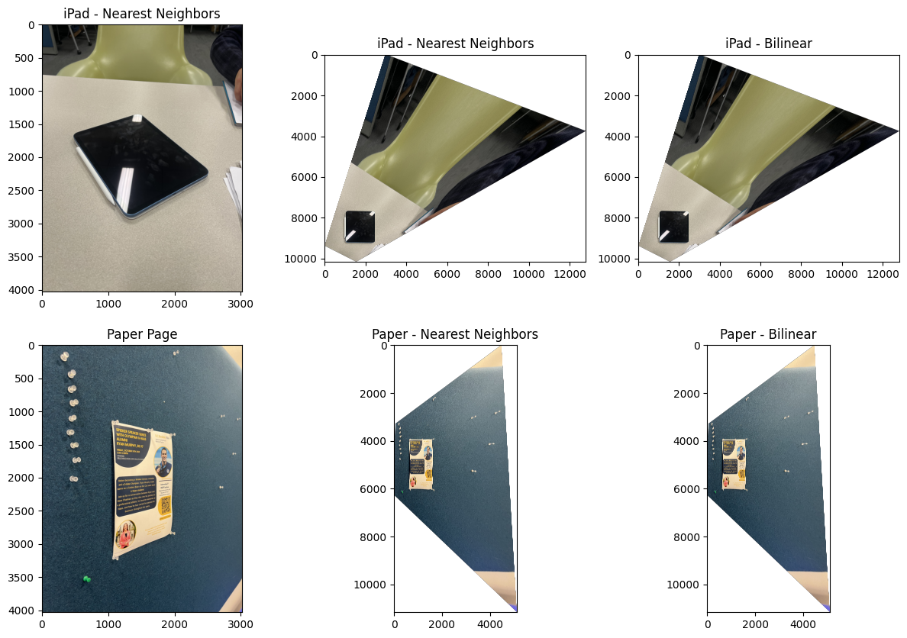

Haas 1

Haas 2
github.com/aditimundra05/cs180/4/index.html
In order to create panoramic mosaics, I took pictures of the Haas Faculty building, the rooftop of my apartment, and outside the library. I fixed the center of projection and rotated my camera while capturing the photos, kept 40% of overlap between the images, and shot in a short time span.


A homography is a projective transformation that maps points from one image plane to another. Mathematically, it relates corresponding points \( \mathbf{p} \) and \( \mathbf{p}' \) between two images as:
where \( H \) is a 3×3 matrix with 8 degrees of freedom (the lower-right element is set to 1 for normalization).
First, I used the tool given to find point correspondences between the two images. Given corresponding points in homogeneous coordinates:
and the homography matrix:
The transformation yields:
Then, I normalized using the z component to come back to the original (x, y) plane, and obtained:
As per discussion, I learned that we can rearrange these equations to get two linear constraints per point correspondence:
For \( n \) point correspondences, we construct an overdetermined system \( A\mathbf{h} = \mathbf{b} \) where \( A \) is a \( 2n \times 8 \) matrix, and solve using least squares: \( \mathbf{h} = (A^TA)^{-1}A^T\mathbf{b} \).
Here are my point correspondences for the images.
Using the point correspondences shown above, the computed homography matrix is:
H_haas = [[ 1.30315558e+00 2.16205768e-03 -9.27599325e+02]
[ 1.15292498e-01 1.17892236e+00 -2.81916782e+02]
[ 7.32444026e-05 3.82886816e-06 1.00000000e+00]]
H_landscape = [[ 1.33437925e+00 -4.47218776e-02 -1.07262312e+03]
[ 1.40441962e-01 1.13252177e+00 -2.39534564e+02]
[ 9.44219893e-05 -2.51788604e-05 1.00000000e+00]]
Once the homography is recovered, we can warp images to align them. I implemented two interpolation methods using inverse warping to avoid holes in the output:
Rather than mapping source pixels to destination (forward warping), which can leave holes since pixels can hit some of the same points during their transformation while leaving others untouched (essentially no pixels map to that place), I used inverse warping. For each pixel in the output image, I computed its corresponding location in the source image using \( H^{-1} \) and interpolated the color value. First, I found the location of the destination image by applying H to the corners of my source image. From this bounding box, I went coordinate by coordinate and applied H_inverse to find the source location. Here, I applied the respective interpolation methods detailed below.
In this method, I rounded the computed coordinates to the nearest integer pixel location and used that pixel's value directly.
Comparison: This method was faster (less time to compute) since very little algebra was involved and there was no blurring in my results. However, though it's not visible in my images, it can produce block-like results since there's no gradual transition or incorporation of other pixel values.
This method computes a weighted average of the four nearest pixels based on their distance from the query point.
Comparison: This method had smoother results since other pixel values were incorporated which resulted in better visual quality of my images. However, it took much longer since there are more computations involved and there was slight blurring.
As shown in the comparison above, bilinear interpolation produces smoother results, particularly in areas with fine details and edges. The nearest neighbor method preserves sharp edges better.
To verify my homography and warping functions were working correctly, I performed rectification on images with rectangular objects (an iPad and a piece of paper). I manually defined correspondences between the rectangles and a standard square, so the homography transformed the distorted objects back to their rectangular shapes.
Here, I blended the images into a mosaic by warping the images one on top of the other and extending the dimensions accordingly. Also, I added simple feathering at every channel using the alpha channel by setting it to 1 at the center of each image and making it fall off until 0 at the edges.
In Part A, I manually selected point correspondences between images to compute homographies. This process is effective, but quite tedious, time-consuming, and prone to human error. Now, I automated the entire pipeline to detect, describe, and match features between images automatically.
First, I need to identify the corners in the images. I implemented the Harris Corner Detector to find points that are likely to be good candidates for matching.
Given an image \( I(x,y) \) and window size \( w \), the Harris corner detection algorithm works as follows:
I discarded points within 20 pixels of the image edges to avoid boundary effects as the research paper stated.
Important Note: I added a threshold_rel parameter to the peak_local_max function since running the function without this resulted in over 100,000 points being detected on the image. This led to my kernel crashing in subsequent steps.
To obtain a more evenly distributed set of interest points, I implemented Adaptive Non-Maximal Suppression (ANMS).
coords (N×2) and response values h (N×1), sort corners in descending order by Harris response strength.n corners with the largest suppression radii.This ensures that selected corners are locally maximal over a large area, promoting even distribution across the image.
After identifying interest points, I created descriptors that characterize the local appearance around each point. These descriptors allow us to match corresponding points between different images.
Why 40×40 → 8×8?
The larger 40×40 window captures more context around the interest point. By blurring and downsampling to 8×8, I create a descriptor that is more robust to small variations in position and lighting.
Above: Sample 8x8 patches extracted from interest points
With feature descriptors computed for both images, I can find correspondences by finding pairs of descriptors that are similar. I implemented a feature matching algorithm that uses the Sum of Squared Differences (SSD) distance metric combined with Lowe's ratio test to identify reliable correspondences.
The ratio test filters out ambiguous matches. If the nearest neighbor is only slightly closer than the second-nearest neighbor, the match is unreliable. By requiring a significant distance ratio (typically < 0.7), it keeps only high-confidence matches.
After feature matching with threshold 0.7, I obtained approximately 20 matches per image pair.
Even with careful matching, some outliers (incorrect matches) still exist. RANSAC (Random Sample Consensus) can compute an accurate homography despite the presence of outliers.
n_iterations, inlier threshold ε.best_H = None, max_inliers = 0.n_iterations:
ε ( ε = 3 pixels).max_inliers, update best_H and max_inliers.best_H.I used 1000 RANSAC iterations with an inlier threshold of 3 pixels.
Here are comparisons between manually stitched (Part A) and automatically stitched (Part B) panoramas.
The automatic stitching pipeline produces results that are comparable to, and in my opinion for mosaics 1 and 3 better than, manual stitching:
However, automatic methods can struggle in scenarios with repetitive patterns or light changes.